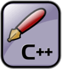

C++入门教程，C++基础教程（更新完毕）
C++ 由C语言发展而来，几乎完全兼容C语言；换句话说，你编写的C语言代码几乎可以不加修改地用于 C++。
C语言是面向过程的语言，C++ 在此基础上增加了面向对象以及泛型编程机制，因此 C++ 更适合大中型程序的开发。然而，C++ 并没有牺牲效率，如果不使用高级特性，它的效率和C语言几乎没有差异。
这套C++入门教程是在C语言的基础上编写的，如果你不了解C语言，请猛击《C语言入门教程》进行学习。C++ 标准库包含了很多类，每个类又包含了很多成员，你可以转到 http://www.cplusplus.com/ 了解它们的用法。
红色链接为高级教程，能够让读者认识到C++的本质，并掌握一些“黑科技”。
- 第1章 从C到C++
- 1.学习C++之前要先学习C语言吗？
- 2.C++类和对象到底是什么意思？
- 3.如何编译和运行C++程序？
- 4.C++命名空间
- 5.C++头文件和std命名空间
- 6.C++输入输出（cin和cout）
- 7.C++变量的定义位置
- 8.C++布尔类型（bool）
- 9.C++中的const又玩出了新花样
- 10.C++ new和delete运算符简介
- 11.C++内联函数
- 12.内联函数也可以用来代替宏
- 13.如何规范地使用内联函数
- 14.C++函数的默认参数
- 15.到底在什么地方指定默认参数
- 16.C++函数重载详解
- 17.函数重载过程中的二义性和类型转换
- 18.如何实现C++和C的混合编程？
- 第2章 类和对象
- 1.C++类的定义和对象的创建
- 2.C++类的成员变量和成员函数
- 3.类成员的访问权限以及类的封装
- 4.C++对象的内存模型
- 5.C++函数编译原理和成员函数的实现
- 6.C++构造函数
- 7.C++构造函数初始化列表
- 8.C++析构函数
- 9.C++对象数组（数组的每个元素都是对象）
- 10.C++成员对象和封闭类
- 11.C++ this指针
- 12.C++静态成员变量
- 13.C++静态成员函数
- 14.C++ const成员变量和成员函数
- 15.C++ const对象
- 16.C++友元函数和友元类
- 17.类其实也是一种作用域
- 18.C++ class和struct的区别
- 19.C++ string（C++字符串）
- 20.C++ string的内部究竟是什么样的
- 21.本章小结，拿去做笔记吧
- 第3章 C++引用
- 1.C++引用10分钟入门教程
- 2.C++引用在本质上是什么，它和指针到底有什么区别？
- 3.C++引用不能绑定到临时数据
- 4.编译器会为const引用创建临时变量
- 5.C++ const引用与转换类型
- 第4章 继承与派生
- 1.C++继承和派生简明教程
- 2.C++三种继承方式
- 3.C++继承时的名字遮蔽问题
- 4.C++类继承时的作用域嵌套，破解C++继承的一切秘密！
- 5.C++继承时的对象内存模型
- 6.C++基类和派生类的构造函数
- 7.C++基类和派生类的析构函数
- 8.C++多继承（多重继承）
- 9.C++多继承时的对象内存模型
- 10.借助指针突破访问权限的限制，访问private、protected属性的成员变量
- 11.C++虚继承和虚基类详解
- 12.C++虚继承时的构造函数
- 13.C++虚继承下的内存模型
- 14.C++向上转型
- 15.将派生类指针赋值给基类指针时到底发生了什么？
- 第5章 C++多态与虚函数
- 1.C++多态和虚函数快速入门教程
- 2.C++虚函数注意事项以及构成多态的条件
- 3.C++虚析构函数的必要性
- 4.C++纯虚函数和抽象类
- 5.C++虚函数表精讲教程，直戳多态的实现机制
- 6.C++ typeid运算符：获取类型信息
- 7.C++ RTTI机制精讲（C++运行时类型识别机制）
- 8.C++静态绑定和动态绑定，彻底理解多态
- 9.C++ RTTI机制下的对象内存模型（透彻）
- 第6章 运算符重载
- 1.C++运算符重载基础教程
- 2.运算符重载时要遵循的规则
- 3.C++重载数学运算符
- 4.到底以成员函数还是全局函数（友元函数）的形式重载运算符
- 5.C++重载>>和<<
- 6.C++重载[]
- 7.C++重载++和--
- 8.C++重载new和delete
- 9.C++重载()
- 10.注意事项以及汇总
- 第7章 模板
- 1.C++函数模板入门教程
- 2.C++类模板入门教程
- 3.大话C++模板编程的来龙去脉
- 4.C++函数模板的重载
- 5.C++函数模板的实参推断
- 6.C++模板的显式具体化
- 7.C++模板中的非类型参数
- 8.C++模板的实例化
- 9.将C++模板应用于多文件编程
- 10.C++模板的显式实例化
- 11.C++类模板与继承
- 12.C++类模板与友元
- 13.C++类模板中的静态成员
- 第9章 面向对象进阶
- 1.C++拷贝构造函数（复制构造函数）
- 2.到底什么时候会调用拷贝构造函数？
- 3.C++深拷贝和浅拷贝
- 4.C++重载=（赋值运算符）
- 5.C++拷贝控制操作（三/五法则）
- 6.C++转换构造函数
- 7.C++类型转换函数
- 8.再谈C++转换构造函数和类型转换函数（进阶）
- 9.C/C++类型转换的本质（经典之作）
- 10.C++四种类型转换运算符
- 第10章 输入输出流
- 1.什么是流，C++输入流和输出流
- 2.C++输出单个字符
- 3.C++输出字符串
- 4.C++ cout.tellp()和cout.seekp()方法
- 5.C++ cout格式化输出
- 6.C++怎样对输入输出重定向？（3种方法）
- 7.C++如何管理输出缓冲区？
- 8.C++读取单个字符
- 9.C++读入一行字符串
- 10.C++如何跳过（忽略）指定字符？
- 11.C++怎样查看输入流中的下一个字符？
- 12.C++ cin是如何判断输入结束（读取结束）的？
- 13.C++处理输入输出错误
关注公众号「站长严长生」，在手机上阅读所有教程，随时随地都能学习。
不定期发布学习路线+书籍文档+优质视频，为初学者指点迷津。
绑定网站登录功能，再也不用担心密码丢失。
编程11年，建站10年，创业7年，写作6年，既有硬知识，也有软技能。
长期更新，坚持原创，敢说真话，凡事有态度。

微信扫码即可关注